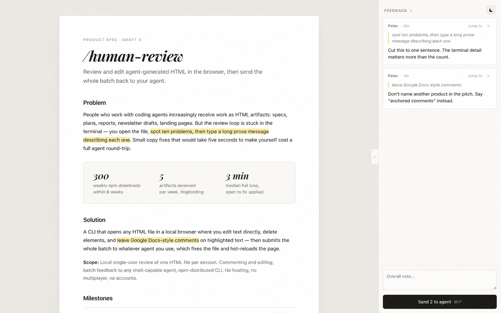
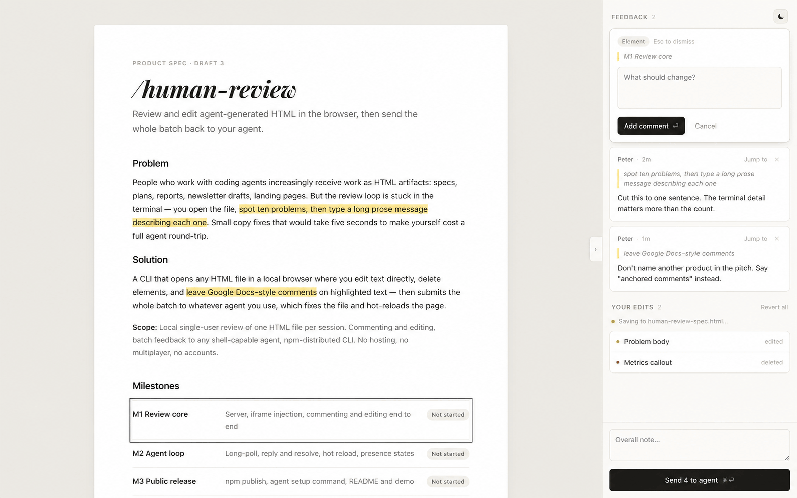

Use the real output
Open an HTML file, rendered Markdown file, or localhost route.
Product spec · Updated August 3, 2026
Edit and comment on agent work in the browser, then send one clean batch back to the agent.
human-review gives any shell-capable coding agent a browser review loop. The human fixes small things directly, comments on exact text or elements, and sends everything together. The agent receives structured feedback, updates the source, and refreshes the page.
Reviewing agent output through chat is slow and imprecise. A person should be able to rewrite a sentence, remove a block, or point at the exact issue without describing where it is. The agent should then handle the source changes without undoing the human's edits.
Open an HTML file, rendered Markdown file, or localhost route.
Rewrite copy, delete elements, and anchor comments to the page.
The agent gets edits, comments, and an optional overall note as JSON.
The agent updates the source, acknowledges the batch, and the page reloads.
| Target | What the human reviews | Where edits land |
|---|---|---|
| Static HTML | The actual file, rendered in the review UI. | Direct edits autosave to the HTML file and are included in the feedback batch. |
| Markdown | A rendered version of the Markdown. | The file stays untouched during review. The agent applies edits to the Markdown source. |
| Generated HTML | The rendered page, including client-side output. | Edits become source-directed feedback so browser serialization cannot corrupt the generator. |
| Localhost URL | The real development route and its assets, not a recreated page. | The agent applies edits to the matching MDX, TSX, template, or component. Rendered HTML is never written back into the app. |
Local, single-user review; direct copy edits; element deletion; anchored comments; multi-page batches; durable feedback; agent-neutral shell commands.
Accounts, cloud sync, multiplayer review, production URL injection, agent chat, or automatic wake-up after an agent task has ended.
| Human action | Product behavior |
|---|---|
| Type over text | The page changes immediately. The review rail records the exact before and after text. |
| Select text | A focused comment box opens, anchored to that exact quote. |
| Click a block | The comment applies to the image, chart, section, or other element. |
| Click the delete control | The element disappears and the deletion is added to the edit list. |
| Command-click a local link | The linked page opens in the same review session. Feedback from visited pages stays grouped in one batch. |
| Send | All edits, comments, and the overall note go to the waiting agent together. |
Direct editing describes the experience, not always the storage layer. A human can type and delete on every supported target. Static HTML can save those changes directly. Markdown, generated pages, and localhost routes send the same exact changes to the agent, which updates the real source.
| State | What it means |
|---|---|
| Listening | A foreground poll command is waiting and will receive the next batch. |
| Working | The agent received the batch but has not acknowledged it yet. |
| Not listening | No poll is active. Feedback is still saved, but the tool cannot restart an agent task or wake an agent harness on its own. |
A ten-minute timeout limits how long one poll stays open; it does not keep the computer awake. Agents can run the same poll again, or use human-review status <target> to check for saved feedback after returning.
The reviewed content keeps its own layout, styling, and behavior. human-review adds only the review chrome and edit affordances.
Pending batches persist across poll timeouts, server restarts, and computer sleep until an agent acknowledges them.
Review first, then Send. The agent responds through the changed page rather than another chat thread.
The UI distinguishes waiting, working, and not listening instead of implying an agent is active when it is not.
These screens show the core review experience: the artifact stays visually intact while comments, direct edits, deletions, and the final Send action live in the rail.


| Command | Purpose |
|---|---|
human-review <target> | Open the file or localhost page for review. |
human-review poll <target> --timeout 600 | Wait for a feedback batch and print it as JSON. |
human-review poll <target> --ack --timeout 600 | Acknowledge the handled batch, reload, and keep listening. |
human-review status <target> | Check whether feedback is waiting without blocking. |
human-review setup --global | Install the usage skill for Claude Code, Codex, and compatible agent directories. |
Any agent that can run shell commands and read JSON can use the same contract. The core product contains no Claude- or Codex-specific runtime integration.
| Layer | Shipped approach |
|---|---|
| Runtime | Node.js 20+ using built-in HTTP, file system, and process APIs. |
| Browser UI | Vanilla JavaScript review rail plus a sandboxed iframe and postMessage. |
| Persistence | Local JSON state for comments and pending batches; atomic writes for editable HTML files. |
| Change detection | Native file watching reloads agent updates while suppressing the tool's own save echoes. |
| Agent transport | Long-poll HTTP to stdout JSON with at-least-once delivery until acknowledgement. |
localhost, 127.0.0.1, and [::1].The core review loop, Markdown rendering, durable feedback, global agent setup, and localhost URL review are implemented. The localhost path has been dogfooded against a real Next.js wiki, including edit, source apply, acknowledgement, and reload.